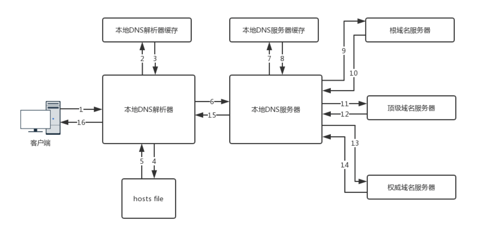

DNS二三事
什么是DNS?
"The Domain Name Systems (DNS) is the phonebook of the Internet. Humans access information online through domain names, like nytimes.com or espn.com. Web browsers interact through Internet Protocol (IP) addresses. DNS translates domain names to IP addresses so browsers can load Internet resources."

一次完整的DNS查询过程

现实中不会只部署一台服务器
我们来看下github.com
;; QUESTION SECTION:
;github.com. IN NS
;; ANSWER SECTION:
github.com. 505 IN NS ns-1707.awsdns-21.co.uk.
github.com. 505 IN NS ns-421.awsdns-52.com.
github.com. 505 IN NS ns-520.awsdns-01.net.
github.com. 505 IN NS ns1.p16.dynect.net.
github.com. 505 IN NS ns2.p16.dynect.net.
github.com. 505 IN NS ns3.p16.dynect.net.
github.com. 505 IN NS ns4.p16.dynect.net.
github.com. 505 IN NS ns-1283.awsdns-32.org.
这8台各自为营？NO
SOA - Start of authority
SOA master file content example
domain.com. IN SOA ns1.domain.com. admin.domain.com. (
12083 ; serial number
3h ; refresh interval
30m ; retry interval
3w ; expiry period
1h ; negative TTL
)
看看github.com的SOA记录
joe:note/ (master) $ dig github.com soa
;; ANSWER SECTION:
github.com. 3600 IN SOA ns1.p16.dynect.net. hostmaster.github.com. 1553204324 3600 600 604800 60